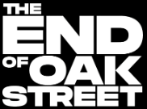

2026·1 h 40 min·Action · Adventure · Mystery
The Platt family bands together to navigate their new surroundings after a cosmic event transports their suburban neighborhood to someplace unknown.
Cast Anne Hathaway, Ewan McGregor, Maisy Stella